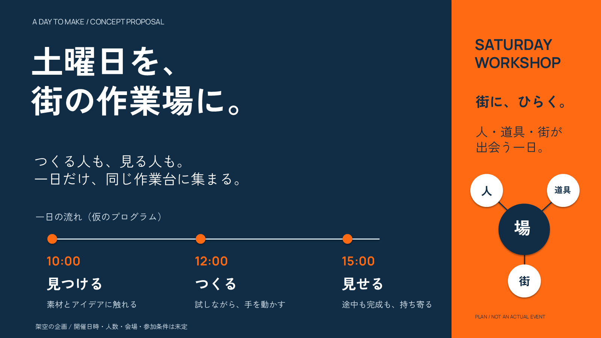

<!doctype html><html lang="ja"><meta charset="utf-8"><meta name="viewport" content="width=device-width"><title>土曜日を、街の作業場に。</title><style>body{margin:0;background:#102d45;color:white;font-family:sans-serif}header,main{padding:25px 5vw}a{color:#ff6a13}img{width:100%;display:block}</style><header><h1>土曜日を、街の作業場に。</h1><p>1枚で伝える架空ワークショップ企画 / 原典agent-slides native PPTX</p><a href="deck.pptx">PowerPoint</a> · <a href="render/deck.pdf">PDF</a> · <a href="SKILL.md">日本語SKILL</a> · <a href="../../../downloads/agent-slides-example-ja.zip">制作ZIP</a></header><main></main></html>